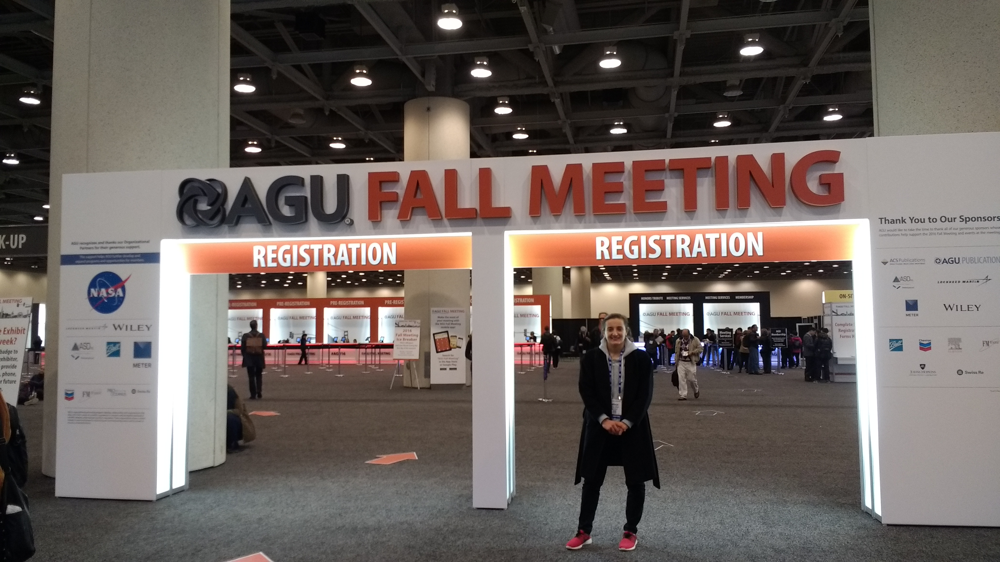
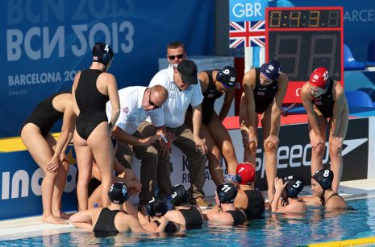

The PhD Student...
My studentship is with the Earth, Atmosphere and Ocean doctoral training programme, based in the School of Earth and Environmental Sciences at The University of Manchester and funded by the Natural Environment Research Council (or NERC for short).
The highlight of my PhD so far has been presenting my work on using the Maxwell-Stefan diffusion framework to model aerosol composition at the American Geophysical Union (AGU) annual fall meeting in San Francisco, it was an amazing opportunity to network with world leading researchers, who have written those hundreds (almost thousands) of jounal articles that I've managed to get through over the past couple of years.
Being a part of the doctoral training programme has given me countless opportunities to go on training courses, attend seminars, get involved in outreach activities and organise a student conference, just to name a few. These opportunites have allowed me to develop many transferable skills, such as communication, organisation, indepedent learning and team work.

The Athlete...
I've been doing this "dual career" thing for a while now, 14 years to be precise. Through those 14 years I have spent time focussing solely on either eductaion or sport. But that never really suited me much, I just like to keep myself busy, some might be right in thinking that I like to make life difficult for myself.
I started swimming at Boldmere Swimming and Water Polo club based in Sutton Coldfield near Birmingham, where my family still voluteer. Then moved on to train with the performance programe at the City of Birmingham Swimming Club for four years, competing at district, regional and national championships, but always held water polo close to my heart.
Aged 15, I started to focus more on water polo playing for Solihull in the women's national league division one and joining the national junior programme. Since then I haven't looked back and jumped on every opportunity to play water polo at the highest level possible. This has taken me to seven national titles with the City of Liverpool Water Polo Club, a year playing abroad in Madrid for La Latina, a World Championship in Barcelona 2013 and to becoming Commonwealth Champion in 2014 with Team England.
After a couple of years out of international water polo due to the loss of UK Sport funding, the British team are coming together to compete at the World University Games in Taipei, 2017.

My Curriculum Vitae
One last thing, my CV. For a more specific CV, academic or sporting, email KathrynFowler91@outlook.com.